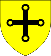
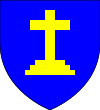

Aged 55
1000–1029 (29)
Inbreeding: 0%
In 998 he married fifteen-year-old Gunnora; union produced a daughter:| Name | Prt. | CoA | Lifespan | Notes |
|---|---|---|---|---|
| Ailova | |
999–1054 Aged 55 |
1029–1040 (11)
Inbreeding: 0%, 1
In 1008 he married thirteen-year-old Gunnilda Darlington; happy union produced twelve children, of which seven survived:| Name | Prt. | CoA | Lifespan | Notes |
|---|---|---|---|---|
| John | 1014 Aged 0 |
|||
| Godfrey II |  |
 | 1016–1073 Aged 57 |
Married Alice Ramsgate in 1035 |
| Alice | 1018–1019 Aged 1 |
|||
| Humphrey | 1019–1029 Aged 10 |
|||
| Denis | |
1020–1071 Aged 51 |
Married Ailova Wallasey in 1041
| |
| Hawis | 1025–1032 Aged 7 |
|||
| Albert |  |
1026–1076 Aged 50 |
Married Margery Gateshead in 1055
| |
| Alice |  |
 |
1027–1089 Aged 62 |
Married Norman Goole in 1045
|
| Osanna | |
1028–1082 Aged 54 |
Married Letard Tadley in 1049 | |
| Humphrey | |
1030–1079 Aged 49 |
Married Alice Penkridge in 1061
| |
| Hawis | 1033–1034 Aged 1 |
|||
| Hawis | |
1035–1096 Aged 61 |
1040–1073 (33)
Inbreeding: 0%, 2
In 1035 he married thirteen-year-old Alice Ramsgate; happy wedlock was childless.1073–1102 (29)
Inbreeding: 0%, 3
In 1073 he married his cousin, thirteen-year-old Ailova Goole; happy couple produced a son, but he didn't survive:| Name | Prt. | CoA | Lifespan | Notes |
|---|---|---|---|---|
| John | 1084–1088 Aged 4 |
1102–1114 (12)
Inbreeding: 0%, 3
In 1098 he married thirty-four-year-old Ragenild Perth; wedlock was childless.1114–1134 (20)
Inbreeding: 0%, 3
In 1102 he married thirteen-year-old Margery Gateshead; happy marriage produced three sons, of which two survived:| Name | Prt. | CoA | Lifespan | Notes |
|---|---|---|---|---|
| Walding | 1108–1111 Aged 3 |
|||
| Bartholomew |  |
 |
1111–1163 Aged 52 |
Married Margaret Hartfell in 1128
|
| Gamel | |
1113–1156 Aged 43 |
Married Alice Hartfell in 1131 |
1134–1163 (29)
Inbreeding: 0%, 4
In 1128 he married his cousin, sixteen-year-old Margaret Hartfell; couple produced two children, yet only one survived:| Name | Prt. | CoA | Lifespan | Notes |
|---|---|---|---|---|
| Alviva |  |
1131–1162 Aged 31 |
Married Wymark Perth in 1146
| |
| Henry | 1133–1146 Aged 13 |
1163–1168 (5)
Inbreeding: 0%, 3
In 1157 he married twenty-one-year-old Alice Romsey; happy union produced eleven children, of which six survived:| Name | Prt. | CoA | Lifespan | Notes |
|---|---|---|---|---|
| Ailova | |
1158–1213 Aged 55 |
Married Pagan Rotherham in 1171 | |
| Rochilda | |
1159–1199 Aged 40 |
Married Bartholomew Humber in 1172
| |
| Alan I |  |
1161–1215 Aged 54 |
Married Christina Seafield in 1180
| |
| Fulke | 1162–1165 Aged 3 |
|||
| Hugo | 1163–1164 Aged 1 |
|||
| Hugo | 1164–1169 Aged 5 |
|||
| Constance | 1165–1173 Aged 8 |
|||
| Fulke | 1166–1168 Aged 2 |
|||
| Avelina |  |
1167–1215 Aged 48 |
Married Pagan Gateshead in 1180 | |
| Matilda | |
1168–1220 Aged 52 |
Married Bartholomew Humber in 1199
| |
| Edward | |
 |
1169–1190 Aged 21 |
Married Mabel Spears in 1186 |
1168–1215 (47)
Inbreeding: 0%, 4
In 1180 he married thirteen-year-old Christina Seafield; happy union produced seven children, yet only three survived:| Name | Prt. | CoA | Lifespan | Notes |
|---|---|---|---|---|
| Avelina | |
1187–1244 Aged 57 |
Married Constantine Seafield in 1213 | |
| Alan II | |
1189–1216 Aged 27 |
Married Alice Jarrow in 1207
| |
| Ailova | 1194–1199 Aged 5 |
|||
| Hugo | |
1195–1213 Aged 18 |
Married Ragenild Tring in 1213 | |
| Ailova | 1199–1200 Aged 1 |
|||
| Fulke | 1200–1201 Aged 1 |
|||
| Constance | |
1209–1277 Aged 68 |
Married Hugo Haywards in 1222
|
1215–1216 (1)
Inbreeding: 7%, 5
In 1207 he married thirteen-year-old Alice Jarrow; loving union produced a daughter, but she didn't survive:| Name | Prt. | CoA | Lifespan | Notes |
|---|---|---|---|---|
| Rochilda | 1213–1214 Aged 1 |
1216–1238 (22)
Inbreeding: 23%, 5
In 1207 he married nineteen-year-old Emma Goole; joyless matrimony produced six children:| Name | Prt. | CoA | Lifespan | Notes |
|---|---|---|---|---|
| Alviva |  |
|
1212–1266 Aged 54 |
Married Gervase Goole in 1227 |
| Denise | |
|
1215–1272 Aged 57 |
Married Robert Goole in 1235
|
| Adelard II |  |
1216–1265 Aged 49 |
Wives:
| |
| Albert |  |
1218–1269 Aged 51 |
Married Isabella Tring in 1263 | |
| Godeleva |  |
1229–1280 Aged 51 |
Married Fulke Goole in 1251
| |
| Alice | |
 | 1233–1296 Aged 63 |
Married Godfrey Cockermouth in 1254
|
1238–1265 (27)
Inbreeding: 13%, 5
In 1238 he married fifteen-year-old Rose Bude; marriage was childless.| Name | Prt. | CoA | Lifespan | Notes |
|---|---|---|---|---|
| Godeleva | |
1252–PRSN Aged 47 |
Married Osbert Carrick in 1273
| |
| Walding | |
1256–PRSN Aged 43 |
Married Agnes Goole in 1271
| |
| Henry | 1257–1259 Aged 2 |
|||
| Albert | 1260–1264 Aged 4 |
|||
| Lucia | |
 |
1264–PRSN Aged 35 |
Married Hugo Bude in 1277
|
1265–PRSN (35)
Inbreeding: 20%, 5
In 1271 he married his cousin, seventeen-year-old Agnes Goole; joyless marriage produced four children, but none survived:| Name | Prt. | CoA | Lifespan | Notes |
|---|---|---|---|---|
| Rose | 1273–1276 Aged 3 |
|||
| Bartholomew | 1275–1276 Aged 1 |
|||
| Eunice | 1287–PRSN Aged 12 |
|||
| Scholastica | 1293–1298 Aged 5 |